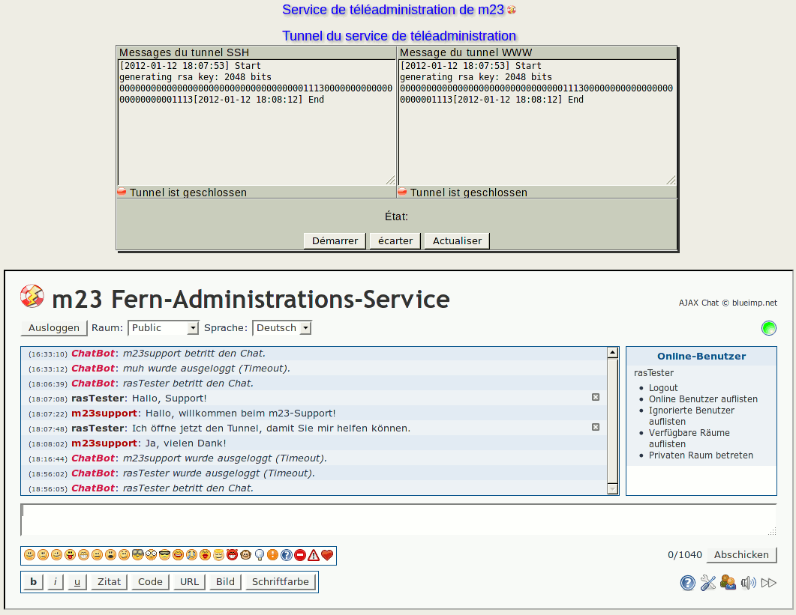

Après avoir importé la clef d'activation du service de téléadministration, vous pouvez dès lors activer les tunnels de communications pour le service de téléadministration de goos-habermann.de. Après l'activation, le support de goos-habermann.de aura accès à votre serveur m23 et peut vous aider dans vos tâches administratives. Le support de goos-habermann.de a les mêmes droits qu'un administrateur m23 local tant que les tunnels sont connectés. Nous vous prions de bien vouloir nous excuser de ne pouvoir répondre qu'aux demandes formulées en anglais ou allemand.
Sous Tunnel du service de téléadministration, vous voyez les états des deux tunnels (Messages du tunnel SSH et Message du tunnel WWW). Pour actualiser l'affichage, cliquez sur Actualiser.
Vous pouvez ouvrir les tunnels en cliquant sur Démarrer, pour les fermer, cliquez sur Arrêter.
Si vous ne voulez plus solliciter le service de téléadministration, vous pouvez effacer les données du service correspondant de votre serveur m23 en cliquant sur supprimer. Pour pouvoir utiliser le service de nouveau, vous devrez re-importer la clef d'activation.
dodger
2014-08-06